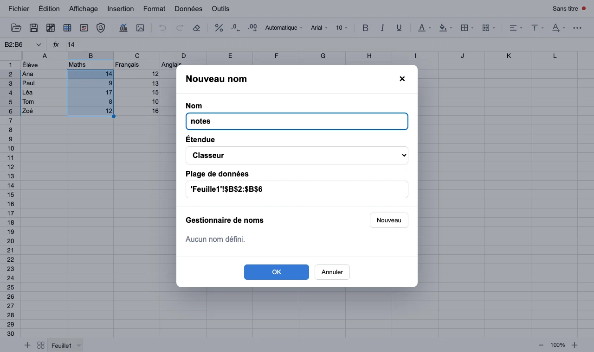

Plages nommées
Donner un nom
- Sélectionner la cellule ou la plage.
- Clic droit › Définir un nom… (ou la flèche de la zone de nom › Gestionnaire de noms).
- Taper le nom, choisir l’étendue, OK.

| Champ | Contenu |
|---|---|
| Nom | commence par une lettre ou _ ; lettres, chiffres, _ et ., sans espace ; pas une adresse comme B2 |
| Étendue | Classeur : lu de toutes les feuilles ; une feuille : lu seulement d’elle, où il l’emporte sur un nom du classeur |
| Plage de données | une cellule ou une plage, avec sa feuille : 'Feuille1'!$B$2:$B$6 |
Utiliser un nom
=MOYENNE(notes)
=prix*(1+tva)- La flèche de la zone de nom liste les noms : en choisir un sélectionne sa plage, dans sa feuille.
- Quand la sélection est exactement une plage nommée, la zone de nom montre son nom.
- Une liste déroulante peut lire une plage de cellules, désignée par son adresse.
Modifier, supprimer
Dans le Gestionnaire de noms, cliquer un nom remet ses champs en modification ; Supprimer l’efface ; Nouveau revient à un nom vide. Avant de supprimer un nom, remplacer les formules qui le lisent : elles gardent leur dernière valeur, puis ne se calculent plus.
Les noms sont enregistrés dans le fichier Excel et lus de même.